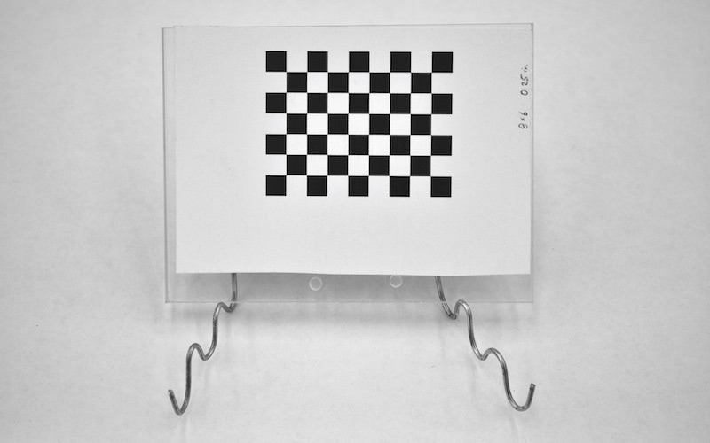
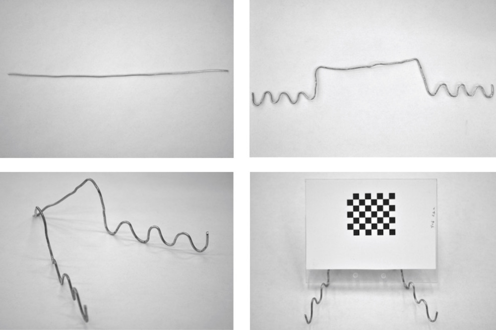
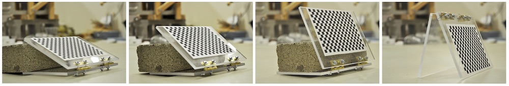

3.5 Creating a checkerboard stand
This section will show you how to precisely measure the square sizes in a checkerboard pattern using an independent standard such as a ruler. The previous section demonstrated how to calculate the size of printed squares based on the size of the squares in pixels, the DPI and the scaling. For most applications that should predict the size of the squares fairly well. But if your setup requires exceptionally high accuracy or you are unsure about the accuracy of your printer, you can follow the steps in this section.
Materials needed for this section:
- Needle-nose pliers
- Thick wire (around 16 gauge)
If you are using StereoMorph for stereo photography, it's useful to have a stand that will hold the checkerboard in place while you take calibration photos with multiple cameras.
If you were to simply hold the checkerboard with your hand you would have to ensure the cameras took photographs at the exact same time. For stereo video, the checkerboard can be moved manually since the videos will have to be synchronized anyway.
The type of stand you'll need depends on the size of your stereo setup. If your checkerboard isn't too heavy, you can create a simple stand with some wire and pliers as shown above. For a large, heavy checkerboard you may need to attach the hard surface to another object via a hinge and use heavy objects to prop the checkerboard at different angles.
